Diagram 1: Loss function architecture overview showing the complete VAE-GAN training pipeline
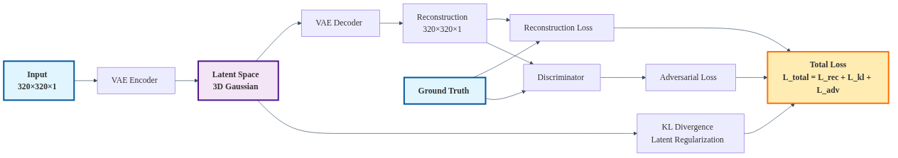
Loss function architecture overview showing the complete VAE-GAN training pipeline
Diagram 2: Reconstruction loss pipeline with L1 and MSE components for input-output comparison
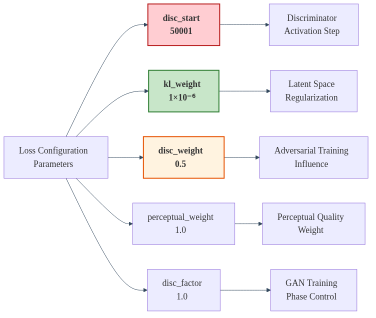
Reconstruction loss pipeline with L1 and MSE components for input-output comparison
Diagram 3: Perceptual loss integration using LPIPS network for feature space comparison
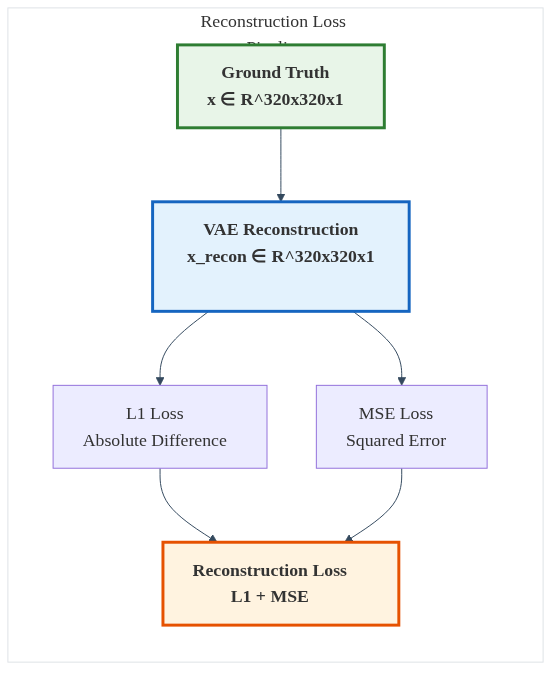
Perceptual loss integration using LPIPS network for feature space comparison
Diagram 4: Variational lower bound calculation with learnable variance parameter
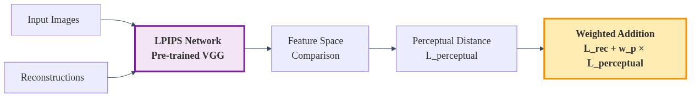
Variational lower bound calculation with learnable variance parameter
Diagram 5: KL divergence loss computation for latent space regularization
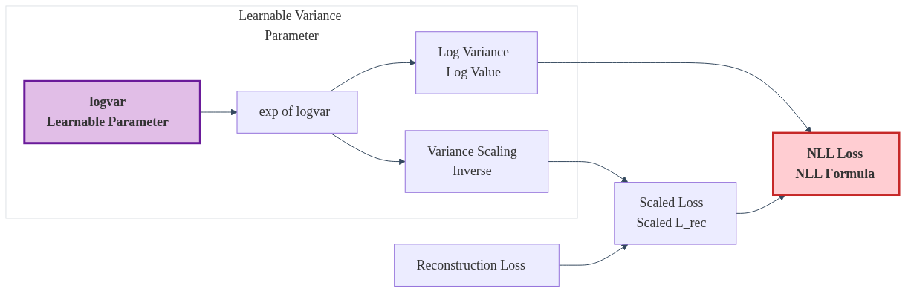
KL divergence loss computation for latent space regularization
Diagram 6: Discriminator network architecture for adversarial training

Discriminator network architecture for adversarial training
Diagram 7: Generator adversarial training component for realistic generation
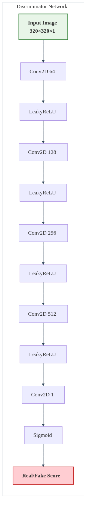
Generator adversarial training component for realistic generation
Diagram 8: Discriminator training with hinge loss for real/fake classification
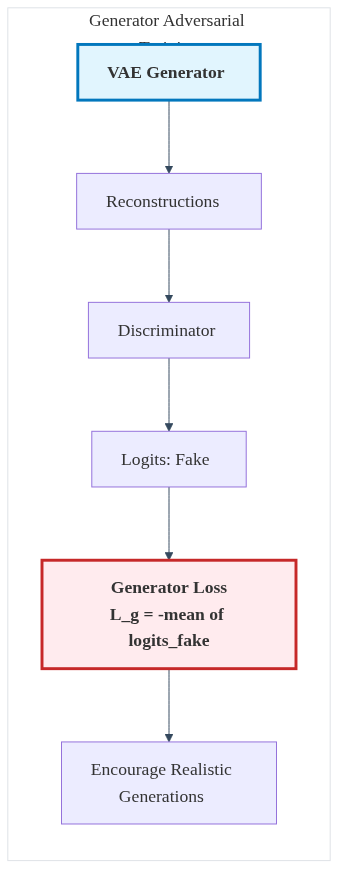
Discriminator training with hinge loss for real/fake classification
Diagram 9: Adaptive weight calculation using gradient norm balancing
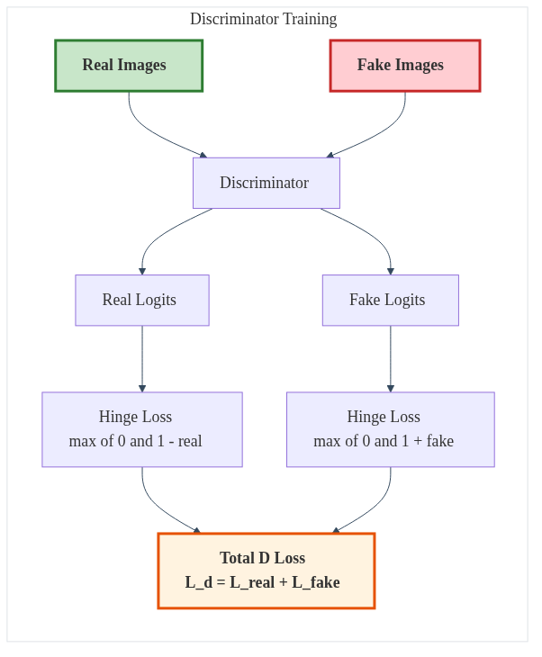
Adaptive weight calculation using gradient norm balancing
Diagram 10: Phase 1 VAE pre-training with reconstruction and KL losses
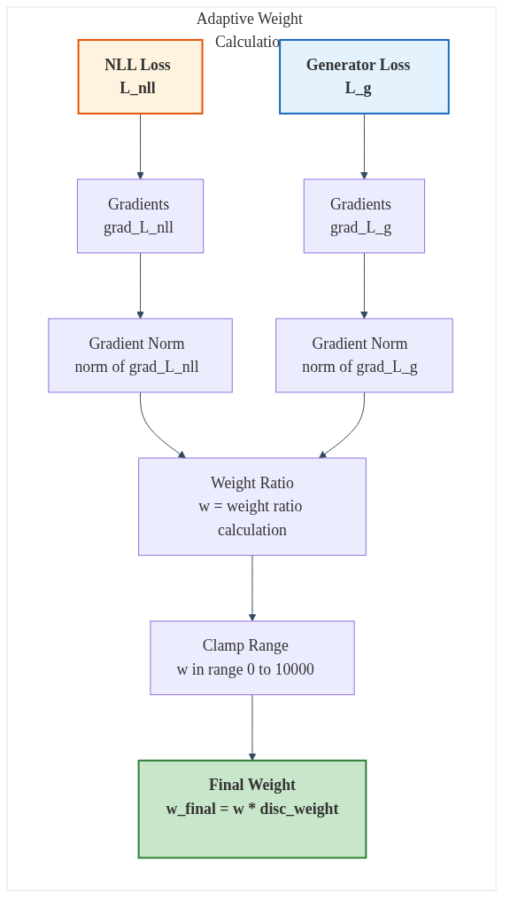
Phase 1 VAE pre-training with reconstruction and KL losses
Diagram 11: Phase 2 VAE-GAN training with full adversarial components
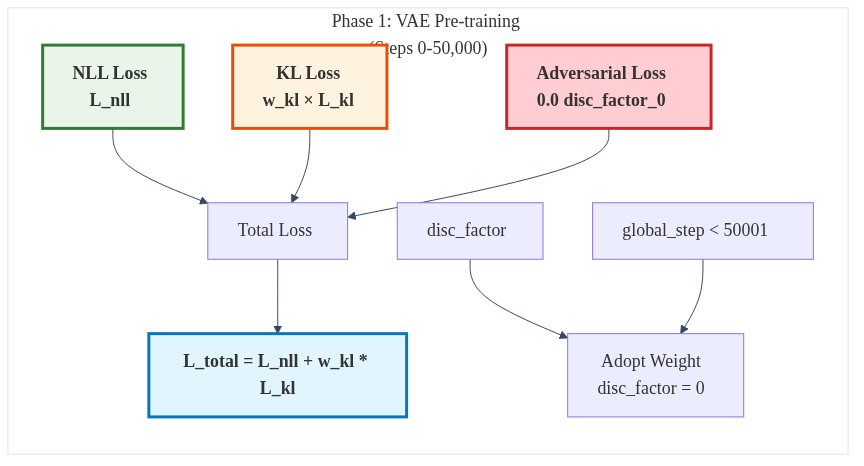
Phase 2 VAE-GAN training with full adversarial components
Diagram 12: Comprehensive loss metrics logging system
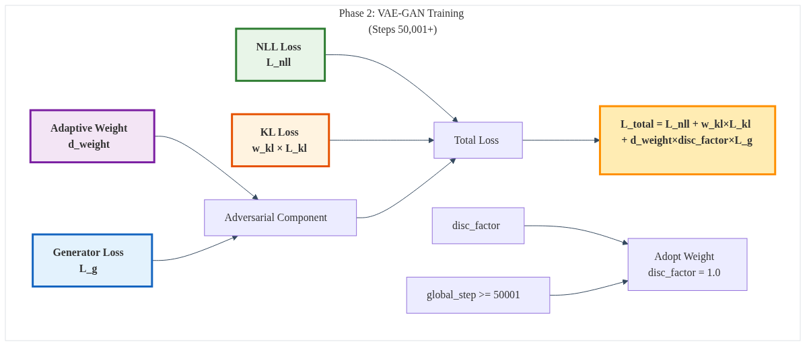
Comprehensive loss metrics logging system
Diagram 13: Edge-aware loss components for radio astronomy applications
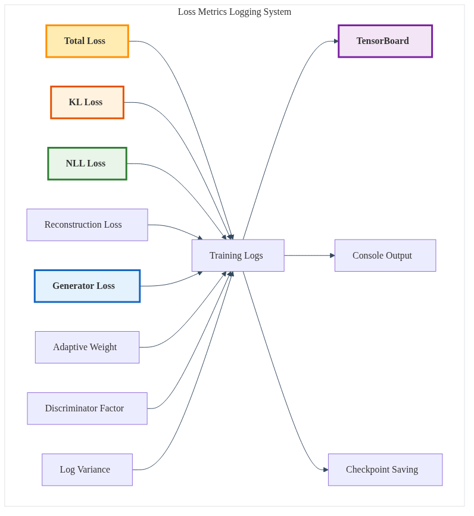
Edge-aware loss components for radio astronomy applications
Diagram 14: Radio propagation physics integration with DPM2IRT4 modeling
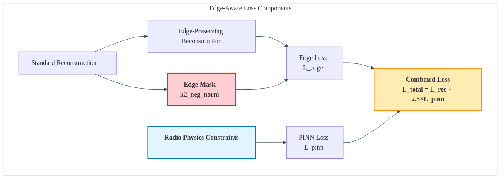
Radio propagation physics integration with DPM2IRT4 modeling
Diagram 15: Two-phase training strategy with progressive learning

Two-phase training strategy with progressive learning
Diagram 16: Loss weight dynamics and evolution during training
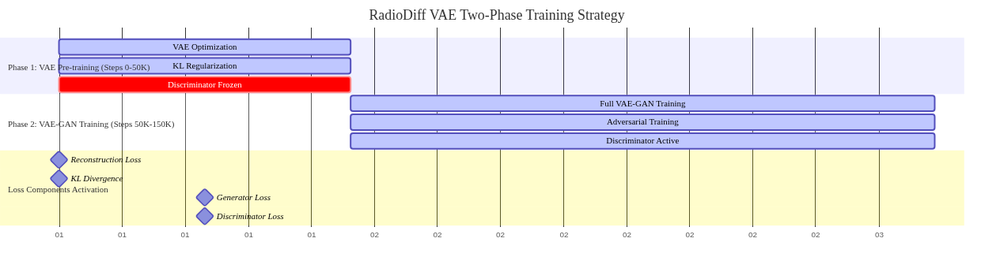
Loss weight dynamics and evolution during training